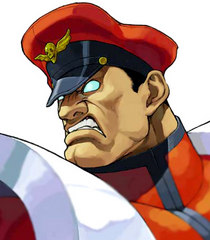

M. Bison is an archetypical villain character motivated by his own selfish interests and lust for power. He is a ruthless, callous and an unforgiving dictator with no hesitations for destroying anyone or anything who opposes him.
 M. Bison is an archetypical villain character motivated by his own selfish interests and lust for power. He is a ruthless, callous and an unforgiving dictator with no hesitations for destroying anyone or anything who opposes him. Unlike other villainous boss characters of the series, like Gill (who desires to rule mankind as a benevolent sovereign) or Akuma (who wants to test his strength against worthy opponents and to die in an honorable fight), Bison is interested in tormenting, exploiting and ultimately oppressing other people to achieve absolute power for his own selfish urges. Unsurprisingly, he has earned the eternal hatred from many other Street Fighter characters (Chun-Li, Guile, Guy, Cammy, Rose, T. Hawk, etc.) for his malevolent and sinister nature. Having banished all goodness in his heart to control Psycho Power, he possesses a dark and irredeemable spirit. He does display a twisted sense of humor which, not to mentioning his characteristic "business before pleasure" attitude, makes him quite a unique and effective villain in the series. Bison also has no regard for the suffering and damages he causes to others, as mentioned in several of his win quotes and also brands others to be weak or that they don't stand a chance against him. He is certainly the most evil character of the Street Fighter franchise, along with Seth.
Bison, C.E.O of the criminal organization known as Shadaloo, hears of a fighter named Ryu who defeated his new henchman, Sagat. Bison decides to recruit Ryu as a replacement body host, and begins the search for him. In the meantime, he is confronted by Rose, a mysterious woman who wields power that is in many ways similar to his own. Rose wins the ensuing battle but only to find out that Bison has left the battlefield completely unscathed and has possibly threw the fight. Reasons for this are disclosed during the events of SFA3. Afterwards, Bison encounters Chun Li. They have a brief duel in which Bison toys around with the girl. He flees and lets Chun Li know that he murdered her father. After this, Bison is finally able to track down Ryu. At first, Bison attemts to persuade Ryu to join him by promising that he would make him the greatest fighter ever. Ryu mocks him and the two engage in combat. Bison wins and takes Ryu's body to his scientists for a brainwashing via exposure to Psycho Power. It is debatable whether this ending is canon or not, however, the exact events which it depicts did took place during SFA3.